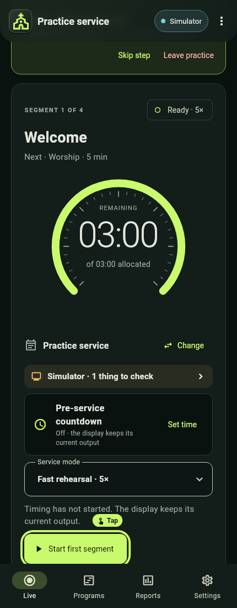

Allow about 15 minutes. Use the simulator so no practice cue reaches a real stage.
The quickest start is guided practice. On a new phone, Live shows a card: "New to this? Practise running a service". Choose Start practice, Not now (hides it until the app is next opened) or Don't show again. You can start it any time from Settings › About › Guided practice.


- Practice loads a built-in 17-minute Practice service that runs at 5× speed on the Simulator, so nothing appears on stage. It is never added to Programs, saves no report and leaves your programs, reports and settings alone.
- If another display is in use, practice asks Practise on the simulator? before switching, and offers to switch back when practice ends.
- A coach card lists eight steps, ticked off as you do them in any order: start, pause and resume, add and remove 2 min, next and Undo, a cue and the timer, blank and unblank, see overtime, and end. A pulsing ring and a small "Tap" badge show which control the current step needs; it never blocks a tap.
- Use Skip step or Leave practice at any time. At the end, a summary such as "8 of 8 steps done · about 4 min" offers Practise again, and About shows when this phone last practised.
- Practice cannot start while a service is loaded or running, or on a paired operator phone.
Then try the full workflow yourself:
- Install the supplied Android app. Check Settings › About for its version. This guide describes 0.30.0. Update every phone together: program files, backups and sent programs saved by 0.28 or later cannot be opened by 0.27 or earlier.
- Tap the display chip at the top of Live and choose Simulator. Confirm the chip and preview badge say Simulator.
- On Live choose Start service, then load Quick rehearsal (a Pinned or Recent program card on Live loads straight away). Loading a program enters Ready; it does not start the countdown.
- Review the first and next segment. While Ready, choose Service mode: Live timing · 1× or a Fast rehearsal speed. A program's Service/Rehearsal grouping is not its speed setting. Change swaps in another program without leaving Ready.
- Select Start first segment. When the display is connected and nothing needs attention, the service starts at once and Undo start is offered for 8 seconds; otherwise a confirmation explains what to check.
- Tap Pause, confirm, and observe the held timer. Tap Resume, then try Custom to add or remove minutes and seconds. Read the proposed result before confirming.
- Open Stage & display and tap one prepared Stage cue. It sends immediately. The countdown continues underneath. Choose Show timer to restore the current timer, not the original starting time.
- Tap Blank screen, then Unblank screen. Blanking hides output; it does not pause the service.
- Use Next (Next segment on a tablet) when the current activity is finished. If this was accidental, use Undo while it is available and review the confirmation.
- Allow a segment to reach zero. Observe the operator's red overtime and the shared At zero display behaviour. Reaching zero does not automatically advance the program.
- Choose End service and confirm. Live returns to Standing by after the report saves. On the Last service card, tap View last service report.
- Finally, tap Quick timer on Live, choose 5 min and start it. Notice there is no Ready step. Tap End timer when you have seen it count. See Operate a live service for details.
You are ready for the next lesson when you can explain: Ready versus running, Pause versus Blank, Show timer versus Next, a Quick timer versus a service, and a display acknowledgement versus a physical check.
Fast rehearsal accelerates simulated service time (5×, 10×, 30× or 60×). Reports identify it as rehearsal timing, and duration insights exclude rehearsals. Use normal speed for the supported physical LED countdown.